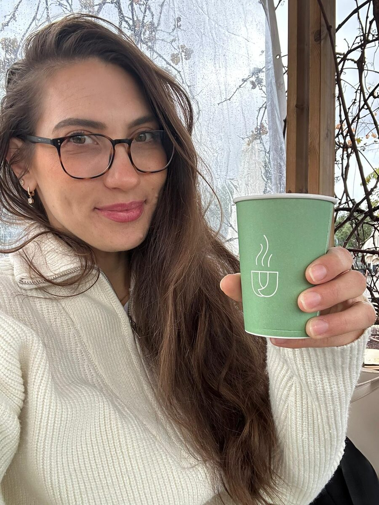

מפגש ראשוני בזום או בקליניקה
כל ליווי מתחיל בפגישת אבחון אישית: היכרות, בדיקת מדדים, מצב בריאותי, וכלים ראשונים שמותאמים אישית.
ויקטוריה גרמן · דיאטנית קלינית מוסמכת
ליווי תזונתי אישי לנשים, מבוגרים ומתבגרים – צעדים קטנים ועקביים, בלי דיאטות קיצוניות ובלי חוקים נוקשים.

היכרות
אני דיאטנית קלינית ומלווה נשים, מבוגרים ומתבגרים בתהליך של בניית אורח חיים בריא ומאוזן.
אני מכירה מקרוב את האתגרים של שגרה עמוסה, עומס נפשי וחוסר זמן – ואת הקושי לשמור על אכילה מסודרת בתוך כל זה. לעיתים זו אכילה רגשית שמופיעה ברגעים לא צפויים, לעיתים תחושת בלבול סביב מה נכון לאכול, ולעיתים פשוט הרצון לדייק את הבחירות ולהכניס יותר תנועה וקשב לגוף ביום־יום.
הגישה שלי מבוססת על ליווי תזונתי אישי, מותאם לצרכים, ליעדים ולאורח החיים שלך. הליווי נשען על ידע מחקרי עדכני ומשלב כלים פרקטיים לשמירה על בריאות, אנרגיה ואיזון – כולל ירידה במשקל במידת הצורך, ובקצב שמתאים לך.
השירותים שלי
כל ליווי מתחיל בהיכרות ונבנה סביב השגרה, המטרות וההעדפות שלך.
כל ליווי מתחיל בפגישת אבחון אישית: היכרות, בדיקת מדדים, מצב בריאותי, וכלים ראשונים שמותאמים אישית.
מפגשים של עד 45 דקות לשמירה על רצף: עוברים על ההרגלים והמטרות שהצבנו, מדייקים, מקבלים כלים חדשים, רישום אכילה אם נדרש – והתאמות, כי החיים דינמיים.
לרוכשי חבילת מעקב ניתן מענה בוואטסאפ גם בין המפגשים – לשאלות, להתלבטויות ולרגעים שבהם צריך מישהו לצידך.
הרצאות לארגונים ולמוסדות במגוון נושאים מעולם התזונה ואורח החיים הבריא – מותאמות לקהל ולמטרה.
איך זה עובד
בלי התחייבות מראש ובלי תפריט שנופל עליך מהשמיים – מתחילים בשיחה ובונים יחד.
שיחה קצרה בוואטסאפ או בטלפון: מה מטריד, מה המטרה, ואיך נראית השגרה שלך. בסופה נדע אם ואיך אפשר להתקדם יחד.
מפגש ראשון בזום או בקליניקה: מדדים, מצב בריאותי, הרגלים והעדפות. מזה נבנית תוכנית שמתאימה לחיים שלך, לא לחיים של מישהו אחר.
מפגשי מעקב של עד 45 דקות, מענה בוואטסאפ בין המפגשים, וכיוונון לאורך הדרך – כי מה שעובד בחודש הראשון לא תמיד מתאים לחודש השלישי.
מוכנים לצעד הראשון? השיחה הראשונה עליי.
בואו נדבריצירת קשר
מוזמנים לקבוע פגישת ייעוץ ראשונית ללא עלות. אשמח להכיר, לשמוע מה חשוב לך, ולהתחיל יחד במסע לבריאות טובה יותר.
צרו קשר בוואטסאפ